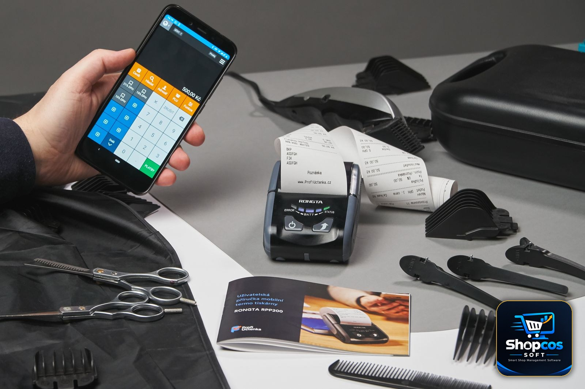

Vyapar Alternative in Pakistan: PKR Billing Without the Indian GST Mismatch

If you are a Pakistani shopkeeper searching for a Vyapar alternative, you probably did not arrive here by accident. You tried Vyapar, or a friend recommended it, and something at your own counter did not quite fit. This article is not an attack on Vyapar. It is a legitimate, popular billing app — built, quite openly, for Indian businesses. The problem is exactly that: a product built for one country's tax system, currency, and shop habits will always create small frictions in another country, and in a busy shop those small frictions add up to real daily annoyance. This guide explains where the mismatch actually shows up, what a Pakistan-first alternative must do differently, and how to switch without losing your items, your customers, or your khata balances.
One honest note before we start: software changes fast. Plans, prices, and features on any app — Vyapar included — can change between the time you read this and the time you install it. Where this article describes Vyapar, it describes the product's Indian-market design, which is its public identity. Before you pay for anything, check the current version yourself against the checklist in this guide. That is the whole point: judge software on your counter, in rupees, under Pakistani conditions — not on another country's demo.
Why So Many Pakistani Shopkeepers Try Vyapar First
It is easy to see the appeal. Vyapar is well known across the border, it is designed for small businesses rather than big companies, it runs on a phone, and it promises fast bills, stock tracking, and customer records in one app. For a shopkeeper who has been billing on a calculator or a paper register, that sounds like exactly the upgrade he needs — and for a simple, cash-only, single-person shop, it may even work well enough for a while. Many Pakistani shopkeepers start there because it is the name they have heard most, not because they compared it with a product built for Pakistan.
The trouble usually appears later, once the shop's real life enters the software: a regular customer asks for udhar, a supplier's rate changes, a bill needs to be printed on the shop's own computer, or a customer questions a tax line on a receipt that does not match anything in Pakistan. That is when the question changes from "does this app make bills?" to "does this app understand my shop?" And that second question is where a Pakistan-first alternative earns its place.
The GST Mismatch, Explained Simply
The single biggest mismatch is tax. India runs on GST — Goods and Services Tax — with its own invoice formats, tax slabs, and filing language. Pakistan does not. A small Pakistani shop is not filing Indian GST, and its customers are not expecting GST lines on their receipts. When an app's billing, reporting, and invoice templates are built around GST, a Pakistani shopkeeper ends up in one of three awkward positions: ignoring tax fields that should not be there, explaining to customers why a receipt shows a tax system they have never heard of, or working around the app's assumptions every single day.
This is not a small cosmetic issue. Tax fields touch every bill, every report, and every record you might one day show an accountant. Software that forces you to think in another country's tax language is software that adds work instead of removing it. A Pakistan-first system, by contrast, bills in plain rupees with no GST assumptions baked in — and keeps the conversation about tax where it belongs for a small shop: simple, local, and in words your accountant and your customer both understand. Our plain-language FBR e-invoicing guide for small shops explains which Pakistani shops actually fall under FBR rules and which do not, so you do not buy software for a compliance burden you do not have.
Currency, Language, and the Daily Details That Matter
After tax, the next mismatches are the ones you touch a hundred times a day. The first is currency. A Pakistani shop bills in PKR. Every price, every total, every khata balance, and every report should read in rupees without conversion, without a foreign currency symbol sneaking onto a printed bill, and without a customer asking why the receipt looks like it came from another country. If you have to double-check the currency on every printout, the software has already failed a basic test.
The second is language and support. A Pakistani shopkeeper should be able to run his counter in Urdu — and, on a PC system, in Roman Urdu or English as well — and get help from someone who understands local shop problems: load shedding, Easypaisa and JazzCash payments, mohalla udhar, and suppliers who change rates without warning. Support that works on another country's business hours, in another country's business language, is support that will not be there on the evening you actually need it.
The third is payments and identity. Pakistani shops take cash, bank transfer, Easypaisa, and JazzCash far more often than they take the payment methods an Indian app is built around. The billing software does not need to process those payments itself — but it must not get in the way of recording them clearly, and its customer records should be built around Pakistani phone numbers and local shop realities, not around another market's onboarding flow. If signing up, paying, or getting support requires workarounds because you are in Pakistan, that is a warning sign, not a minor inconvenience.
Phone App vs PC Software: The Trade-Off Nobody Mentions
Here is the honest trade-off at the heart of this comparison. Vyapar is a mobile-first app: your shop lives on your phone. That is convenient — until your customer list grows, your staff needs to bill while you are away, or your eyes get tired of managing a thousand items on a small screen. A PC billing system like shopcos soft is the opposite bet: the shop lives on the counter computer, with a big screen, a keyboard, a barcode scanner, and a printer attached. It is less portable and more powerful, and for a shop with real stock, real staff, and real daily volume, that power is usually the right trade.
Neither choice is wrong in the abstract. The question is which one matches your shop today. If you are a one-person stall billing twenty customers a day from your pocket, a phone app may genuinely be enough. If you have a counter, a printer, staff, and a khata book that already fills pages, a PC system will save you time every single day — and the phone stays free for what it does best, like sending a bill or a khata statement over WhatsApp. Do not let anyone sell you "mobile" or "PC" as a virtue in itself. Ask which device your counter actually runs on, and buy for that counter.
What a Pakistan-First Alternative Must Do: The Checklist
Use this checklist on any alternative you consider — including shopcos soft. A product that fails two or more of these is not ready for a Pakistani counter, however good its demo looks:
- PKR everywhere, by default. Prices, bills, reports, and khata balances in rupees, with no foreign tax or currency assumptions on a printed receipt.
- No GST-shaped billing. Bills that make sense to a Pakistani customer and a Pakistani accountant, without Indian tax fields to ignore or explain away.
- Udhar inside the bill. Choose the customer, mark the bill as udhar, and watch his ledger update automatically — with credit limits that warn at the counter before goods leave. Our guide to managing udhar khata covers the habits; the software's job is to make them effortless.
- Full offline billing. If the internet drops during load shedding, billing, stock deduction, and khata recording must all continue normally on the shop's own computer, and sync or back up when the connection returns.
- Barcode, stock, and expiry in one place. Scanning, stock that falls the moment a bill prints, low-stock warnings, and expiry alerts for medical and grocery items — not three separate tools.
- Staff logins with owner-only controls. The person at the counter can bill and record payments; only the owner sees buying rates and full reports.
- Your data on your machine. Your items, customers, and khata should live on your PC with a backup you control — not only on a vendor's server that you lose the day a subscription lapses.
- Local support in your language. Help over WhatsApp, in Urdu, from people who understand Pakistani shops — not a ticket queue in another time zone.
The 10-minute switch test: before you commit to any alternative, bill a real basket on it — a scanned packet, a loose item if you sell one, a price changed mid-bill, and half the bill on udhar for a named customer. Then unplug the internet and bill the next customer. Then print the receipt and read it as your customer would. If any step needs a workaround, a foreign tax field, or a currency you did not choose, keep looking.
Vyapar vs a Pakistan-First Alternative: An Honest Comparison
| What your counter needs | An Indian-market app (Vyapar's design) | A Pakistan-first PC system |
|---|---|---|
| Currency | Built around INR and Indian market assumptions | PKR by default, on every bill and report |
| Tax on the bill | GST-shaped invoices and tax language | Plain rupee bills, no GST fields to explain |
| Udhar / khata | Customer credit exists, but not built around mohalla khata habits | Khata at the centre: limits, ledgers, WhatsApp statements |
| Main device | Phone-first | Counter PC, with scanner and printer attached |
| Offline behaviour | Depends on the app and connection; test it yourself | Fully offline billing on your own machine |
| Data ownership | Account-based; check export and exit terms before you commit | Data on your PC, with a backup you control |
| Support | Built for its home market's users | WhatsApp support in Urdu for Pakistani shops |
Read that table fairly: the left column is not a list of flaws in a bad product. It is a list of design choices that make perfect sense in India and imperfect sense in Pakistan. The right column is not a claim that one product is perfect — it is a claim about fit. Fit is what you are actually buying, and fit is decided at your counter, not in an app-store rating.

The Price Question: Monthly Abroad vs One-Time at Home
Price deserves the same honesty. Many billing apps, in India and Pakistan alike, now charge monthly. A small monthly fee feels cheap — until you multiply it. Even a modest subscription, kept for three years, adds up to several times the price of a one-time purchase, and the day you stop paying, the software usually stops working and your data becomes a negotiation. A one-time purchase costs more on day one and far less by year two, and it keeps running whether or not you ever pay again.
Shopcos soft, to be fully transparent about our own product, costs Rs 40,000 once for a lifetime license, with a 30-day free trial and no card required to try it. That is more than a month of a cheap subscription and far less than three years of one. Do the same maths for any alternative you consider: monthly fee, multiplied by 36 months, plus any hardware or support plan the vendor quietly requires — and then ask what happens to your data if you leave. An honest vendor answers that question in one sentence. Our POS software cost guide for Pakistan walks through the full rupee-by-rupee breakdown if you want to compare properly before deciding.
Switching Without Losing Your Shop's Records
The fear that keeps shopkeepers on the wrong software is not the price — it is the move. "Mere paas 500 items aur 100 udhar customers hain, main dobara kaise likhun?" You do not retype everything in one sitting, and you do not close the shop to do it. The order that works:
- Export what you can, before you cancel anything. From your current app, export or write down your item list, your customer list, and — most importantly — each customer's current udhar balance. Do this while your old account is still active, not after it expires.
- Start with your top 100 items. The products that make up most of your daily sales. Enter those first, with correct prices. Slow-moving items can be added over the following week as they sell.
- Load udhar opening balances, not full histories. For each regular customer, enter one number: what he owes today. The old app stays as history; from day one, every new bill and payment is recorded properly in the new system.
- Run both systems for three days, then stop. Bill on the new software and keep the old app as a cross-check. When the day-closing totals match three evenings in a row, retire the old app. Shops that run two systems "just in case" for months end up trusting neither.
- Train the person who actually bills. If your cashier or son handles the counter, he must be able to bill, scan, record udhar, and reprint a bill without calling you. Software only the owner can operate is a bottleneck, not a solution.
One more practical warning: never cancel the old app until the new system's opening balances are verified. A week of overlap costs you nothing; a lost khata ledger costs you customers' trust and money you may never recover.
Who Should Stay, and Who Should Switch?
Stay where you are if your current app already bills cleanly in rupees, handles your udhar without workarounds, prints receipts your customers understand, and keeps working through load shedding — and if its long-term cost still makes sense to you. Switching for its own sake is wasted effort, and no honest guide should tell you otherwise.
Switch if you are explaining tax fields that do not belong in Pakistan, converting currency in your head, managing khata in a separate notebook because the app's version does not match how your customers actually pay, or paying a monthly fee that has already passed the price of a one-time license. Those are not minor annoyances; they are daily taxes on your time, and they compound exactly like a bad loan — quietly, every day, until the shop is working for the software instead of the other way round.
The Bottom Line
Vyapar became popular by solving a real problem for Indian small businesses. Pakistani shopkeepers deserve the same quality of solution, built for their own currency, their own tax reality, their own udhar habits, and their own load-shedding afternoons. That is the standard to hold any alternative to — including ours. Test it with your own basket, your own udhar customer, and your own printed receipt, during a real rush, with the internet unplugged. The right system will feel boring in the best possible way: bills print in rupees, stock falls, khata updates, and the queue moves. If a system cannot do that on your counter, in Pakistan, it does not matter how well it works anywhere else.
Photo credits: A customer ordering at a shop counter photo by Tima Miroshnichenko · Hands managing cash, receipts and a calculator photo by Kaboompics · A shopkeeper using a smartphone billing app at a counter photo by Hook Tell — all via Pexels.
Bill in PKR, with khata built in — no GST mismatch.
shopcos soft: Rs 40,000 one-time (lifetime license), fast billing, digital khata with credit limits and WhatsApp statements, automatic stock deduction, expiry alerts, 100% offline billing with online sync, full Urdu interface — and WhatsApp support in your language. Try it free for 30 days before you spend anything.
Start 30-day Free TrialQuestions? WhatsApp us: 0326 4025618